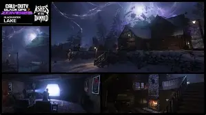
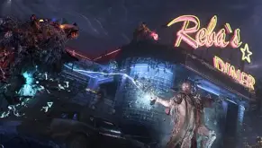
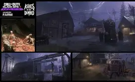
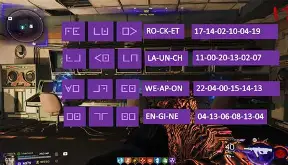

The tesla gun with the clock tower and what it leads to.
you well receive a tesla gun after doing the key steps. this allows you to make a charged up in the clock tower. afterwords you well need to make sure that you hit it in the clock circle. it has 4 different sides and you must shoot it with the wonder weapon and then reload close to it to progress and start the steps of the EE. During the steps you well need to follow curtain instructions to progress through the EE egg like setting souls free, launching a rocket, or getting rid of cannibals spirits. after those steps you'll need to use the clock tower a final time after going to the docks near the cabin area and interact with some souls floating. Then you well need to shoot a projector while glowing purple from shooting the clocktower, afterwords you well well see the projector activate and it well show 4 locations of the films witch you well need find in that cabin area you well need to shoot it with the wonder weapon after you've done that you need to make kluas the robot collect the a item in the top inside of the cabin, then follow kluas and it'll tell you to begin something. you well then need to wait for the countdown and go when zombies start coming, you well then find souls in the path. with old tessie you then need to go towards the end of the path by following the souls and then you'll be teleported to the boss fight!



